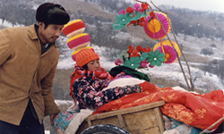
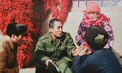
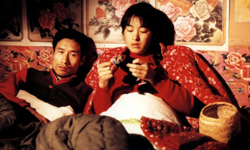
Based on Chen Yunabin’s novella "The Wan Family’s Lawsuit", The Story of Qiu Ju was a huge success on the festival circuit, earning a plethora of awards, including the Golden Lion for Zhang and the Volpi Cup for Best Actress for Gong Li, at the Venice Film Festival. The film is set in present-day China (1992) in north-west Shaanxi province (an area which the director would return to in his film The Road Home). Many of the street scenes in the cities were filmed with a hidden camera so the images are a sort of documentary of China during the time of Deng Xiaoping. As film critic Roger Ebert said "along the way we absorb more information about the lives of ordinary people in everyday China than in any other film I've seen."
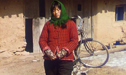
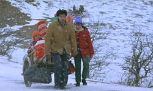
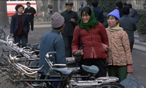
The leader of the village kicks Qinglai in the groin during a heated discussion, and his beating is so harsh that he has to abstain from work for some days. Qiu Ju, his pregnant wife, complains to the local police officer and he makes the village chief pay 200 Yuan to Qinglai. When Qiu Ju goes to the headman, he insultingly throws the 200 Yuan notes onto the ground and refuses to apologise. Qiu Ju refuses to pick up the money and embarks on a journey that will bring her to the highest grades of Chinese justice in order to exact a proper apology. Bureaucracy, however, proves a monster not easily dealt with.
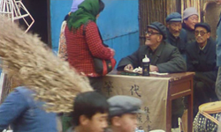
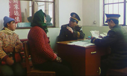
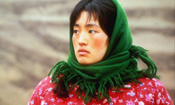
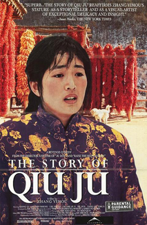
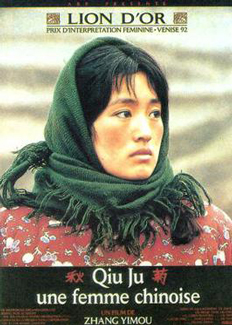
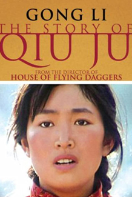
Gender roles in modern China are shown, though these are more true of rural than of urban areas. Many in the village are concerned that Qiu Ju has overstepped the bounds of a wife; her relationship with her husband begins to suffer stress as a result.
The Story of Qiu Ju allows us to see another China, that inhabited by perhaps seventy per cent of the population. It is the China of the countryside and those towns and cities not on the tourist or media tracks. Set in northwest China, its images can be used to illustrate many features of Chinese society today. The story line, compelling in a Kafka-like way, easily holds the interest.
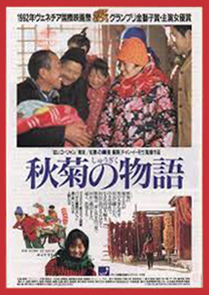
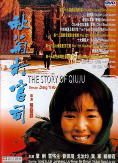
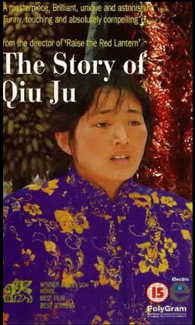